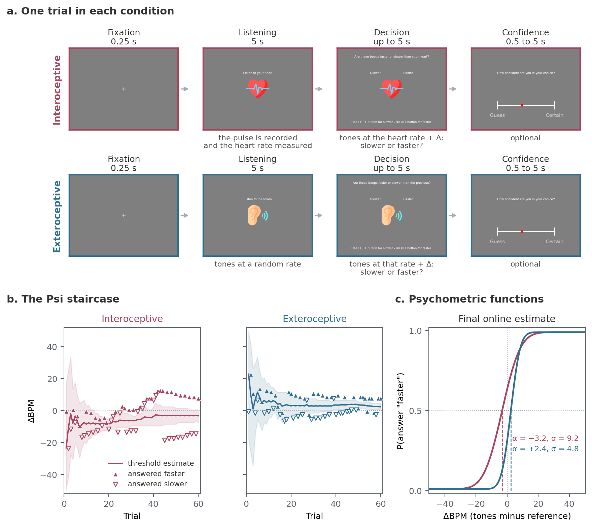

Heart Rate Discrimination task#
The Heart Rate Discrimination task (HRD) [Legrand et al., 2022] measures how a person judges their own heart rate. On each trial the participant hears tones slightly faster or slower than their heart and says which. The threshold of the resulting psychometric function is their bias, its slope their precision, and the confidence rating on every trial measures their metacognition. The task is established. Measuring cardiac interoception sets out what it can and cannot establish.
What a trial looks like#
A trial begins with a fixation cross for 0.25 s. The participant then attends to their heartbeat for 5 s while the pulse is recorded and the heart rate measured. They hear a sequence of tones at that rate plus or minus a difference, Alpha, in beats per minute, and answer whether the tones were faster or slower than their heart, with the mouse buttons or the up and down arrow keys. They have 5 s to answer. They then rate their confidence, on a 0 to 100 slider with the mouse or in ten steps with the keyboard. The rating takes between 0.5 and 5 s.
Half the trials by default are an exteroceptive control. The participant listens for 5 s to a tone sequence at a random rate between 40 and 100 BPM instead of their heart, then judges a second sequence against it. Everything else is the same.

(a) The task’s screens for one trial in each condition, with the default durations; a 0.5 s fixation precedes the decision. (b) The Psi staircase for one participant from the Visceral Mind Project: each trial’s ΔBPM, marked by the answer given, and the threshold estimate with its 95 percent interval. (c) The psychometric functions at the staircase’s final online estimates, with the threshold (α) at 50 percent “faster”. The tutorials fit these properly.#
A Psi staircase [Kontsevich and Tyler, 1999], one per condition, chooses Alpha on each trial between -50.5 and 50.5 ΔBPM, where the answer is most informative about the participant’s threshold and slope. A trial with no answer in time is written with DecisionProvided false, does not update the staircase, and is put back at the end of the queue (onMissedTrial="represent", at most three presentations).
A session starts with a tutorial when runTutorial=True: instruction screens, five practice trials per condition with feedback at an easy difference of 20 BPM (nFeedback), then eight per condition with a confidence rating and no feedback (nConfidence). The main task runs 120 trials by default, 60 per condition, with a break every 20. The four example sessions in the documentation took 20 to 22 minutes without the tutorial, about 10 s a trial; at that pace the tutorial’s 26 trials add about 5 minutes, plus the instruction screens.
What you need#
A pulse oximeter on a USB port (the Nonin 3012LP Xpod by default), or an ECG or PPG device streaming over Lab Streaming Layer. Recording devices covers both and how to check the oximeter before a session.
Headphones or speakers.
A mouse or a keyboard.
Running it#
The repository ships a wrapper for the oximeter, wrappers/hrd.py, and one for LSL, wrappers/hrd_lsl.py. Copy the one you need next to your data folder and run it:
python hrd.py
A dialog asks for:
Field |
Default |
What it sets |
|---|---|---|
participant |
|
The participant identifier |
session |
|
The session identifier |
Serial port |
|
The port the oximeter is on. |
Setup |
|
|
Device |
|
|
Language |
|
The instructions |
The LSL wrapper asks for the stream name, the channel label and the signal type (ecg or ppg) instead of the port and setup.
The same in a script:
from cardioception.HRD.parameters import getParameters
from cardioception.HRD.task import run
parameters = getParameters(
participant="Subject_01", session="HRD", serialPort="COM3",
setup="behavioral", nTrials=120, exteroception=True)
run(parameters, confidenceRating=True, runTutorial=True)
parameters["win"].close()
With an LSL device, pass a recorder instead of a port and close it at the end:
from cardioception.devices import LSLRecorder
recorder = LSLRecorder(name="PLUX", channel="ECG2", signal_type="ecg")
parameters = getParameters(participant="Subject_01", session="HRD", recorder=recorder)
run(parameters, confidenceRating=True, runTutorial=True)
parameters["win"].close()
recorder.close()
Escape ends the session; what has been collected is saved.
The main settings#
The arguments of getParameters that change the task:
Argument |
Default |
Meaning |
|---|---|---|
|
120 |
Trials in all. With |
|
|
Include the exteroceptive control condition |
|
|
|
|
|
|
|
by device |
A |
|
0.0 |
Share of trials at a fixed difference instead of the staircase’s, cycling through -30, +10, -20, +20, -10 and +30 BPM, to control the range of stimuli. They do not update the staircase. 0.2 if used |
|
|
Re-present a trial with no answer ( |
|
20 |
Trials between breaks |
|
0 |
The screen the task window opens on |
|
|
Root of the run directories |
|
|
Allow writing into a run directory that already holds results |
|
drawn |
Seeds the session’s random generator; recorded in the manifest |
|
|
The only staircase. The nUp/nDown staircase was removed in 1.0.0, so |
Timing and the staircase bounds are on a TaskConfig, passed as config=:
from cardioception.HRD.config import TaskConfig
parameters = getParameters(..., config=TaskConfig(respMax=8, nFeedback=10))
Field |
Default |
Meaning |
|---|---|---|
|
5.0 s |
The listening window in both conditions |
|
5.0 s |
Time to answer |
|
0.5, 5.0 s |
Bounds on the confidence rating |
|
40 to 120 BPM |
A heart rate outside this range is treated as artefact and the window retaken, up to |
|
40 to 100 by 0.5 |
The rates the exteroceptive reference is drawn from |
|
|
The Psi settings for both staircases, below |
|
From the preset |
The stimuli the staircase may present, and the thresholds and slopes it considers, in ΔBPM. A value set here applies to both conditions |
|
From the preset |
The lapse rate, held fixed |
psiPreset chooses between two sets of Psi settings. "legacy" is the setting of the original paper and of every earlier release: the same uniform ranges in both conditions. "courtin" narrows the ranges separately for each condition, to what the hierarchical refit of the Visceral Mind Project data found plausible, and halves the lapse rate [Courtin et al., 2026].
Stimuli |
Threshold α |
Slope σ |
Lapse |
|
|---|---|---|---|---|
|
-50.5 to 50.5 |
-50.5 to 50.5 |
0.1 to 25 |
0.02 |
|
-50.5 to 50.5 |
-42 to 26 |
3.2 to 29 |
0.01 |
|
-50.5 to 50.5 |
-9 to 9 |
2.5 to 15.2 |
0.01 |
PsychoPy’s Psi method takes only a uniform prior, so the narrower ranges concentrate it, and the staircase spends fewer trials on implausible values. The ranges are also hard bounds: a participant whose threshold lies outside them is estimated at the edge. Sessions run with "legacy" remain directly comparable with published data. The settings each staircase used are written to manifest.json.
parameters = getParameters(..., config=TaskConfig(psiPreset="courtin"))
The staircase is response-coded, so it converges on the point of subjective equality between faster and slower, which is the participant’s bias, not on a target level of accuracy. That is what the task is designed to measure, but it has consequences for any measure scored against the true heart rate; see the metacognition tutorial. Tone sequences exist for 15 to 199 BPM, so a rate outside that range is clamped and the staircase is told the clamped value.
What it saves#
A session writes to data/sub-<participant>/ses-<session>/run-<YYYYMMDD-HHMMSS>/, under resultPath when it is given. Every file name carries the three identifiers.
File |
Contents |
|---|---|
|
One row per trial |
|
The pulse recorded in every interoceptive listening window, with the trial number and each sample’s time |
|
The oximeter recording, saved at every break and at the end, with the trigger codes in |
|
The staircase posterior after each trial |
|
The settings, the seed and the version, written before the first trial |
|
The rows written after every trial, the parameters at the end, and the session’s log |
The columns of *_final.txt that matter:
Column |
Meaning |
|---|---|
|
|
|
The reference rate, the rate of the tones, and their difference in ΔBPM |
|
|
|
Whether the decision matched the sign of |
|
The rating on the scale shown. |
|
Whether the answer and the rating were given in time |
|
The staircase’s own running estimates. |
listenBPM is the rate over the listening window, 60000 / mean(IBI). Before 1.0 it was the mean of the per-beat rates, about 0.33 BPM higher on real PPG, so sessions run with 1.0 are not directly comparable to published ones on this column; the old value is kept as listenBPM_arithmetic.
The inspecting data tutorial describes every column.
Reading the results#
EstimatedThreshold and EstimatedSlope are a by-product of the staircase. Plot them to check that a session converged. They are not an analysis and must not be used as a dependent variable in a group-level test.
Fit the trials instead, Decision against Alpha by Modality, with the Hierarchical Interoception toolbox [Courtin et al., 2026]. The tutorials go from opening a session to a hierarchical model with confidence ratings.
Reliability#
In the validation study, 190 participants ran the task a second time, about seven weeks after the first session. The test-retest correlation was r = 0.51 for the threshold and r = 0.10 for the slope [Legrand et al., 2022].
Where to go next#
Measuring cardiac interoception: why the HRD measures beliefs about heart rate, and what you may conclude from it.
Tutorials: inspecting a session, fitting psychometric functions, hierarchical models and metacognition.
HTML reports (legacy): the notebook report of a session.
API: every argument of
getParametersand every field ofTaskConfig.